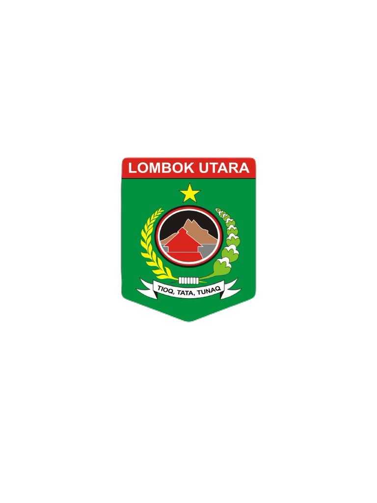
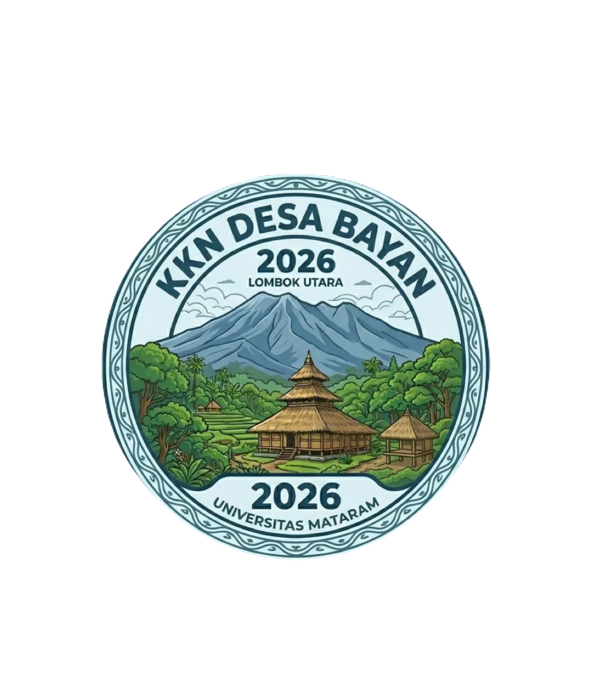
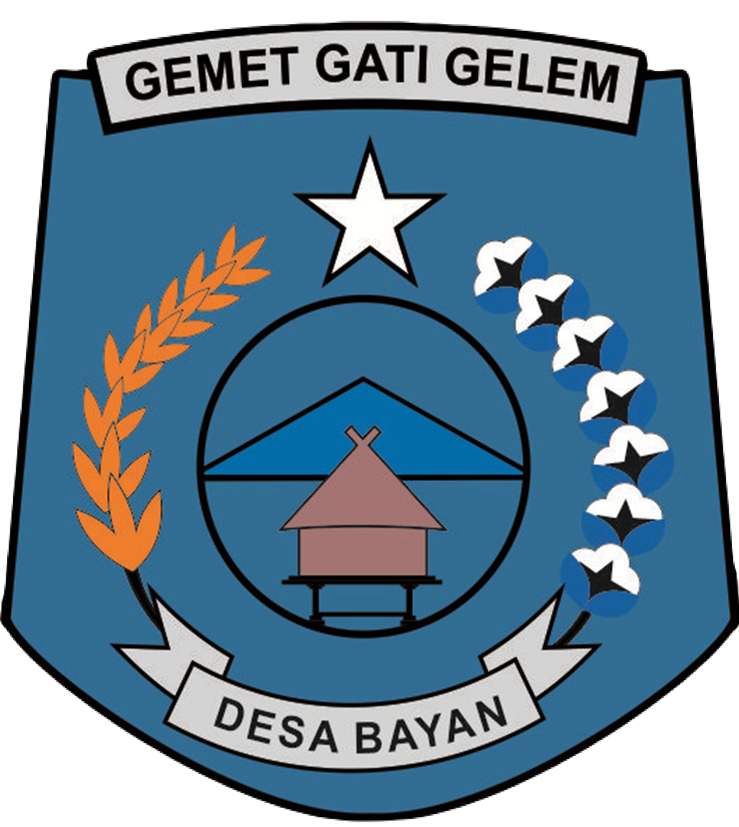
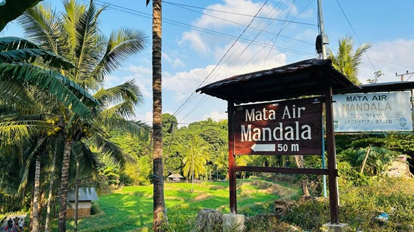
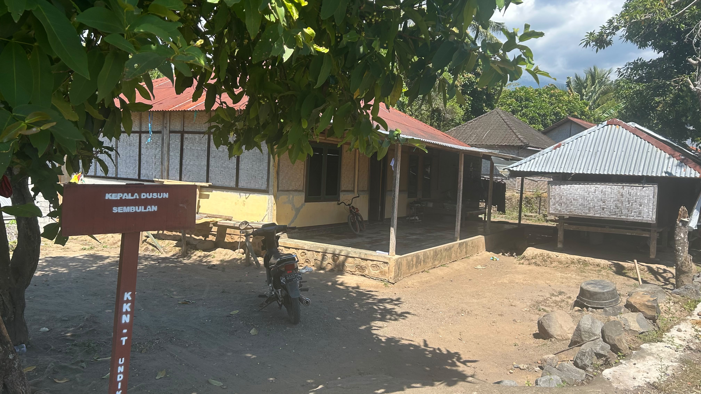
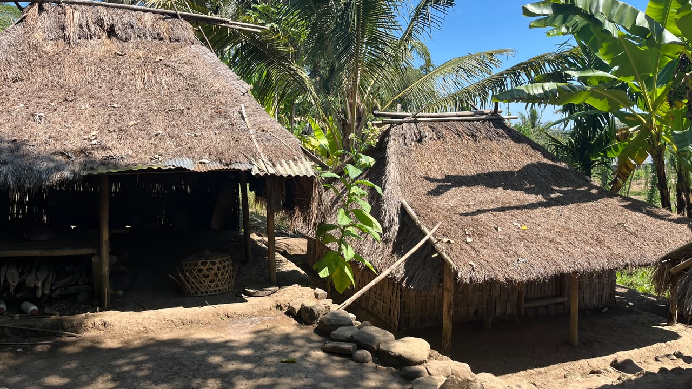

Desa Bayan
Kecamatan Bayan, Kabupaten Lombok Utara
Nusa Tenggara Barat (NTB)
Desa Bayan merupakan pusat budaya Sasak tertua di Pulau Lombok yang terletak di lereng utara Gunung Rinjani. Dikenal sebagai kampung halaman Suku Bayan dengan tradisi Islam Wetu Telu, Masjid Kuno Bayan Beleq dari abad ke-16, serta keindahan alam seperti sawah terasering dan air terjun yang memukau.
Peta Pariwisata Desa Bayan
Peta wilayah dan batas administrasi Desa Bayan

Profil Desa
Desa Bayan merupakan salah satu dari 11 desa yang berada di Kecamatan Bayan, Kabupaten Lombok Utara, Provinsi Nusa Tenggara Barat. Desa ini terletak di lereng utara Gunung Rinjani dan merupakan pusat budaya Sasak tertua di Pulau Lombok. Desa Bayan dikenal sebagai kampung halaman Suku Bayan yang masih memegang teguh adat istiadat dan tradisi turun-temurun.
Desa Bayan memiliki Masjid Kuno Bayan Beleq yang berdiri sejak abad ke-16, merupakan masjid tertua di Pulau Lombok dengan arsitektur tradisional dari bambu dan ilalang yang masih terjaga. Selain itu, desa ini juga memiliki 8 Hutan Adat yang menjadi sumber mata air dan dijaga kelestariannya melalui hukum adat.
Visi & Misi Desa
Terwujudnya Masyarakat Desa Bayan yang MANTAB (Aman, Tentram, Damai dan Berkeadilan)
- 1. Melanjutkan program-program yang telah dilaksanakan oleh pemerintah Desa Bayan periode lalu, sebagaimana tercantum dalam dokumen RPJMDes Desa Bayan.
- 2. Memberdayakan semua potensi masyarakat Desa Bayan yang meliputi:
- Pemberdayaan sumber daya manusia (SDM)
- Pemberdayaan sumber daya alam (SDA)
- Pemberdayaan Ekonomi Kerakyatan
- 3. Menciptakan masyarakat Desa Bayan yang aman, tentram, tertib, dan rukun dalam kehidupan bermasyarakat dengan berpegang teguh pada prinsip-prinsip:
- "Duduk sama rendah, berdiri sama tinggi"
- "Ringan sama dijinjing, berat sama dipikul"
- 4. Optimalisasi pelayanan pemerintahan desa Bayan yang meliputi:
- Pelayanan kepada masyarakat yang cepat, tepat dan benar
- Penyelenggaraan pemerintahan yang transparan dan akuntabel
- Pelaksanaan pembangunan yang berkesinambungan dan mengedepankan partisipasi nilai-nilai gotong-royong masyarakat
- 5. Meningkatkan kualitas pelayanan kesehatan masyarakat melalui dinas terkait.
- 6. Mendukung program pemerintah (LHK) kehutanan terhadap Reboisasi, serta menghijaukan dan melestarikan hutan adat melalui awik-awik lokal adat desa, guna menjaga kelestarian sumber mata air.
Karakteristik Desa
Desa Adat Bayan memiliki karakteristik khas yang membedakannya dari desa lain:
- Pusat Budaya Sasak Tertua - Suku Bayan dikenal sebagai pengamal adat-istiadat asli Pulau Lombok
- Islam Wetu Telu - Sistem keyakinan tradisional yang menggabungkan hukum agama, adat, dan pemerintah
- Hukum Adat yang Ketat - Mengatur hubungan manusia dengan Tuhan, alam, dan sesama
- 8 Hutan Adat - Pangempokan, Bangket Bayan, Tiurarangan, Mandala, Lokoq Getaq, Singang Borot, Sambel, Montong Gedeng
- Bangunan Tradisional - Berugak, Geleng (lumbung), dan Bale Mengina
- Desa Wisata Budaya - Destinasi wisata yang memadukan sejarah, budaya, dan keindahan alam
Potensi Desa
Sejarah Pemerintahan
| Periode | Kepala Desa / Pemusungan |
|---|---|
| 1967–1974 | Raden Sutasari |
| 1974–1979 | Raden Suta Gede |
| 1979–1998 | Raden Gonda Kusuma |
| 1998–2012 | Raden Sugeti, S.Sos. |
| 2013–2019 | Raden Madikusuma |
| 2019–2020 | Muhajir, S.Pd., M.Pd. (Penjabat) |
| 2020–2026 | Satradi, SP. |
| 2026–2028 | Satradi, SP. |
Warisan Budaya & Sejarah
Kontak & Lokasi
Kabupaten Lombok Utara, NTB
±74 km dari Kota Mataram
13 Dusun di Desa Bayan
Klik pada dusun untuk melihat informasi lengkap






